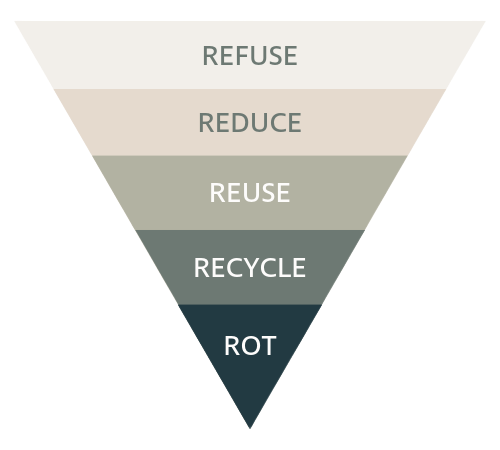
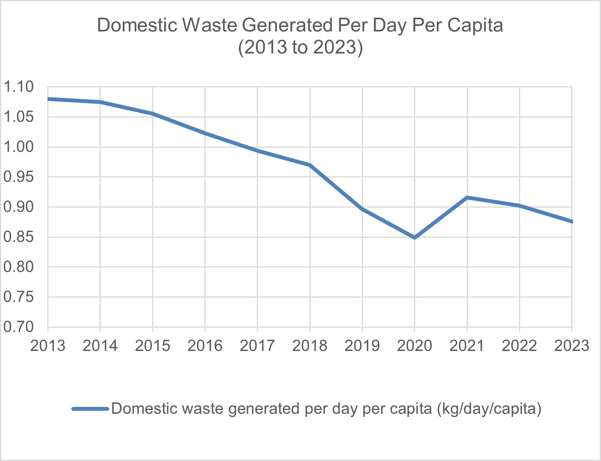
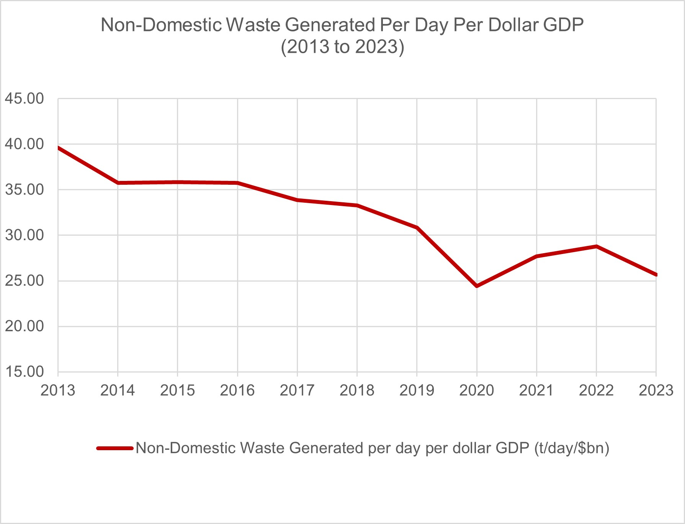
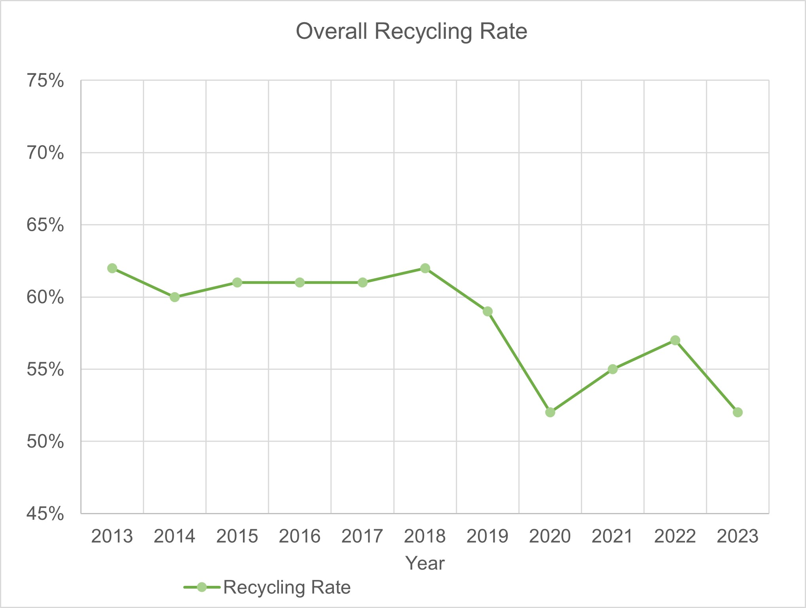
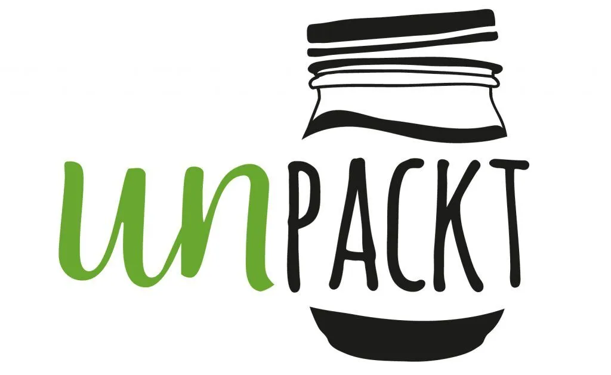
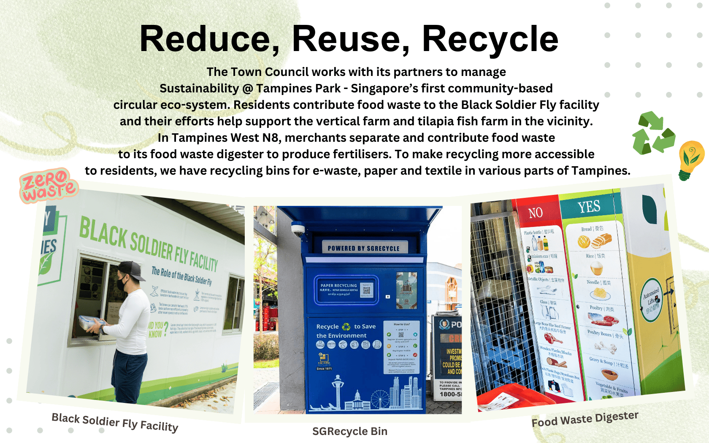

🌿Zero Waste Lifestyle : What Is It About?🌿
Zero Waste Lifestyle is about choices that YOU make that minimises waste production and the negative environmental impacts.
Refusing
Refusing at its core is just to say NO. Refuse
single use plastic - packaging, bags and straws so no unnecessary
waste will be generated.
For example,
REFUSE single use plastic bags when offered during
checkouts, instead bring your own reusable bags.
By doing so,
we can reduce the amount of waste generated.
Reducing
Reducing means to use less and NOT waste. The
idea is to reduce the use of harmful and non recyclable
products.
For example, when printing documents, ensure that
both sides of the paper are used. This REDUCES the
amount of paper used when printing.
By doing so less paper is
used and wasted resulting in reduced waste generation.
Reusing
Reusing or Repurposing is reusing existing products and materials
and NOT throw them away.
For example, one
can REUSE tin cans for the potting of new plants.
By
doing so we can give waste items another purpose and less waste
will be generated as items are reused.
Recycling
Recycling is simply to "use something again". Waste material can
be broken down into their raw material and be made into another
product instead of going to a landfill.
For example, after
drinking a bottle of water, the one time use plastic bottle can be
thrown into the recycling bin instead of into general waste. This
RECYCLES the plastic bottle and allows it to be made
into something else that is of use.
By doing so, we can
reduce the amount of waste generated and slow down the rate of
waste that ends up in landfills.
Composting/Rot
Composting is the managed aerobic (oxygen required) biological
decomposition of organic materials by microorganisms. Organic
(Carbon based) materials. Compost is obtained after composting.
Compost can build soil health and provide nutrients to plants.
For
example, after eating a meal, instead of throwing away the
leftovers, you can COMPOST them instead and use the
compost to grow more produce reducing food waste.
By doing
so, we can reduce food waste as they are repurposed as compost to
grow more produce and provide food.

Statistics
So exactly how much waste does the average person produce?
In 2022, Singapore generated a total of 6.39 million tonnes of solid waste. Domestic wastes contributes to 1.86 million tonnes. Singapore's population in 2022 was around 5.6 million. Using all these information, we can calculate that every person generates around 332kg of waste every year domestically and around 1141kg per person every year if we include waste per capita.


As seen from the graphs, there is a overall decrease in the amount of waste generated Per Day Per Capita from 2013 to 2023.

However, despite the overall decrease in the amount of waste generated Per Day Per Capita from 2013 to 2023, the overall recycling rate has also decreased from approximately 62% to 52% within the same time frame as seen from the Overall Recycling Rate graph. So what are some things we can do to work towards a ZERO waste lifestyle?
Real Life Examples
There are many real life initiatives by people that work towards a
zero waste lifestyle.
For example, Unpackt: Singapore's first
ZeroWaste Grocery and Lifestyle Store and Tampines Eco Town:
Singapore's sustainable Eco Town. Click the drop down below to learn
more about these zero waste initiatives.
Click to find out more
Singapore's first Zero Waste Grocery Store
Unpackt is Singapore's first Zero Waste Grocery and Lifestyle
Store. It is a zero-waste bulk store that offer package free
shopping and encourages customers to bring their own containers.
Items are also sold by weight to ensure customers only get what
they need. Products like nuts for example are stored in bulk
dispensers. This encourages customers to refill instead of
buying new containers. Unpackt also helps reduce food wastages
by reselling or giving away 'ugly' produce that are perfectly
edible. For example, Unpackt helped save over 100kg of mandarin
oranges from being wasted during Chinese New Year. Unpackt
usually brings in unsold fruit from wholesalers to prevent
wastage. These practices ensure that there are no unnecessary
waste produced.

Click Here To Learn More
Click to find out more
Town in a Garden
Tampines is slowly making enhancements and making its community
more green and environmentally sustainable, working its way to
achieve zero waste step by step. It has a variety of measures
put in place to work towards sustainability. One of its measures
aims to let its residents reduce food waste. The Town Council
works with other stakeholders to manage Sustainability@Tampines
Park - Singapore's first community based circular eco-system.
Residents contribute food waste to the Black Soldier Fly
Facility and this helps support the vertical farm and tilapia
fish farm in the vicinity that helps reduce food waste. In
Tampines West N8, merchants seperate and contribute food waste
to its food waste digester to produce fertilisers. To make
recycling more accessible, there is an ample amount of recycling
bins for different types of waste. This helps to reduce
unnecessary waste overall throughout Tampines.

Click Here To Learn More